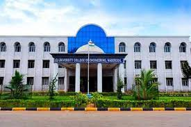

<div class="card-2 mb-3 rounded text-white">
    <div class="row g-0">
        <div class="col-md-4">
            
        </div>
        <div class="col-md-8">
            <div class="card-body">
                <h5 class="card-title">Welcome to University College of Engineering Nagercoil</h5>

                <p class="card-text"> University College of Engineering,Nagercoil is one of the constituent Engineering Colleges of Anna University, Chennai. The campus is formed in the year 2009 with a goal of enhancing the quality of technical education in the southern part
                    of Tamilnadu. The students are admitted through single window counselling. Trees and fresh air in the campus disentangles the entangles of the students and thus making it a wonderful study environment.</p>
            </div>
        </div>
    </div>
</div>